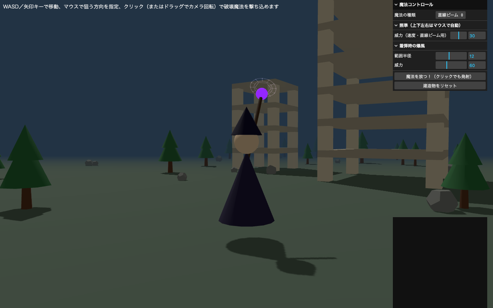
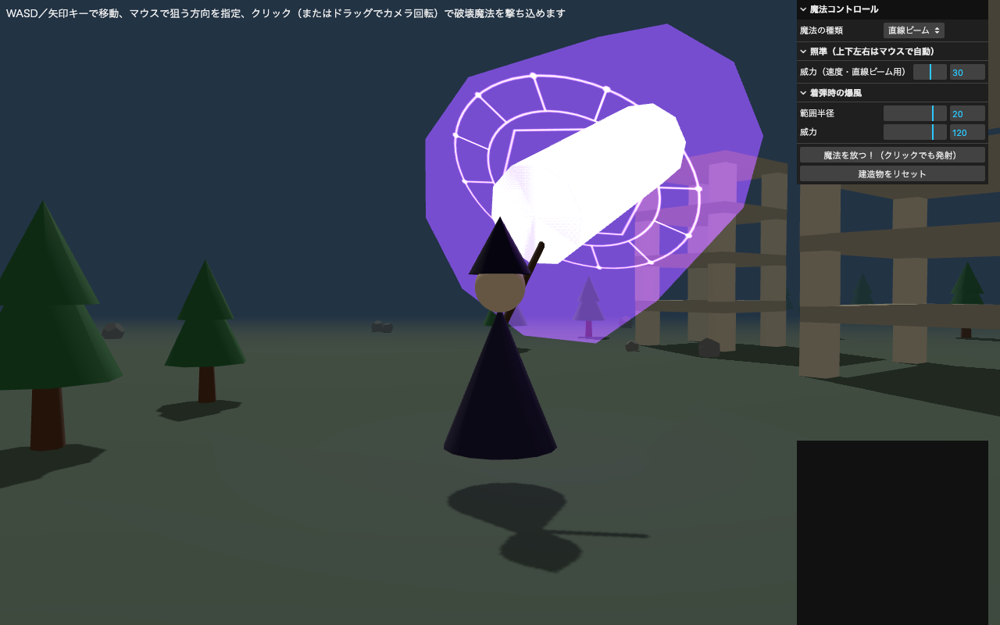
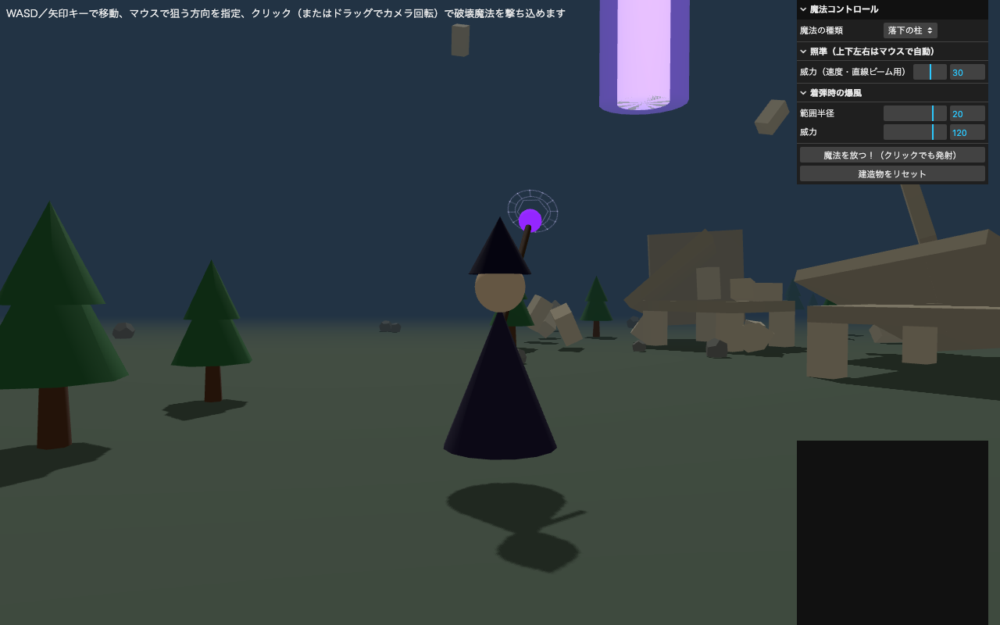
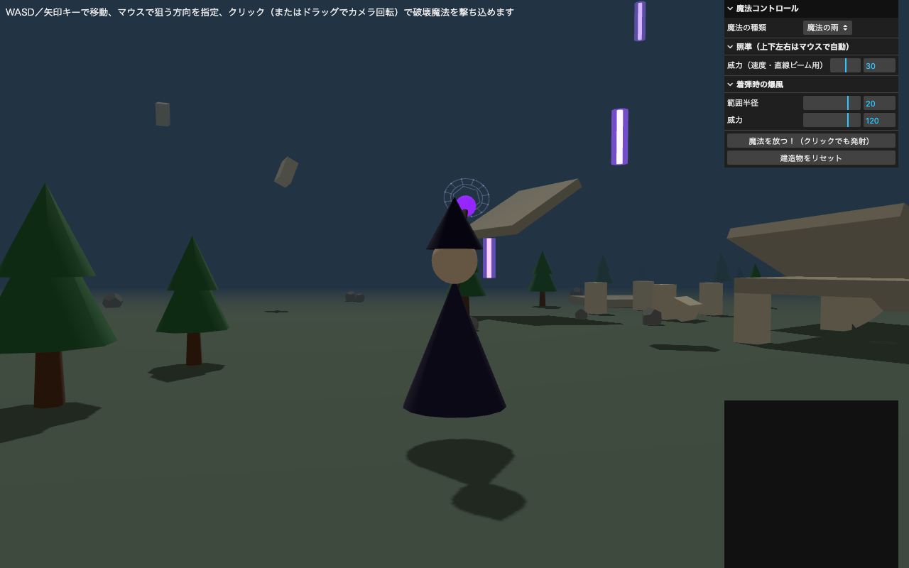
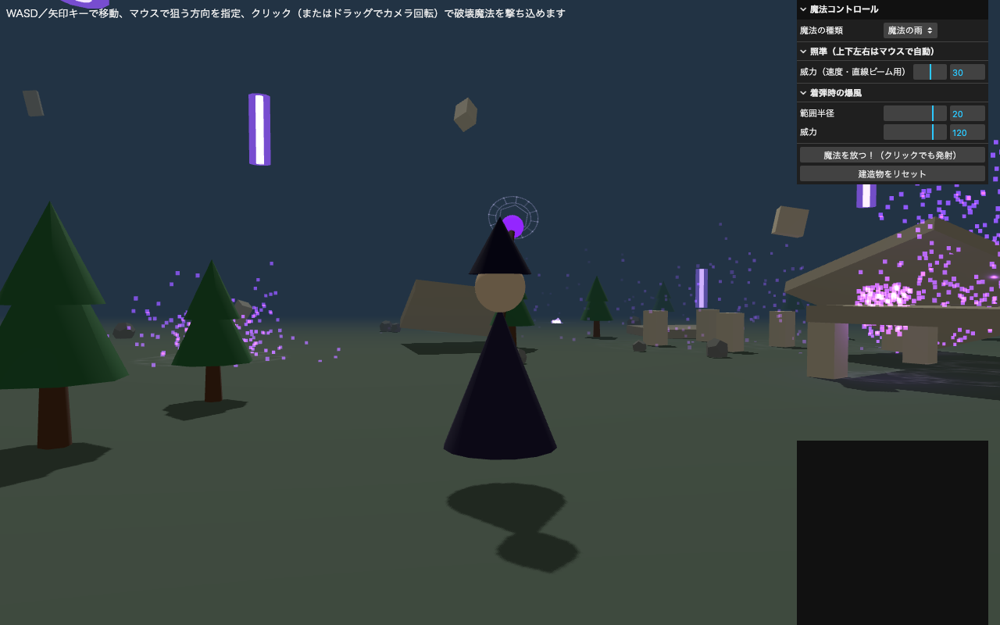

破壊魔法シミュレーター — 物理演算による建造物破壊デモ
学籍番号：（学籍番号を記入） ／ CGモデリングおよび演習 最終課題
制作物URL：（GitHub Pages 公開後にURLを記入）
ソース：app.ts ほか一式を提出フォルダに同梱
概要
Three.js と物理エンジン cannon-es を用い、汎用の魔法使いキャラクターを操作して遺跡風の建造物群を
破壊する3Dアクションデモを制作した。プレイヤーはWASDキーで移動し、マウスで自由に照準・視点操作を行いながら、
3種類の魔法で建物を物理演算的に崩壊させることができる。
特徴・工夫した点
- 物理演算による破壊表現：建造物は複数のBox形状（柱・スラブ）をcannon-esの剛体として組み上げて構築。着弾地点からの距離減衰する衝撃（インパルス）を各ブロックへ適用し、崩れ方が着弾位置・威力によって毎回変化する。
- 魔法3種類の実装：①直線ビーム（狙った1点へ正確に着弾する高速弾）、②落下の柱（着弾地点の真上から太い柱が落下）、③魔法の雨（周囲に複数の弾がランダムに降り注ぐ）を実装し、それぞれ弾道計算・着弾判定を切り替えている。
- 威力・範囲に応じた視覚スケーリング：GUIの「範囲半径」「威力」を上げるほど、魔法本体（ビームの太さ・柱の直径・雨粒のサイズ）と爆発パーティクルの量・速度・着弾範囲・本数までもが連動して大きく／多くなるよう調整した。
- 正確なマウス照準：画面上でクリックした地点（地面だけでなく建物の側面・上層階も含む）へレイキャストを行い、その3D座標に確実に着弾するよう放物線の初速を逆算している。
- 魔法陣・パーティクル演出：Canvas 2D APIで生成した魔法陣テクスチャを詠唱時に展開・発光させ、着弾時には威力に応じた量のパーティクル爆発とインパクトフラッシュを発生させることで、破壊の迫力を演出した。
- 三人称視点と自由な探索：OrbitControlsをキャラクター追従型にカスタマイズし、マウスドラッグでの視点回転とWASD移動を両立。複数の塔・木・岩を配置した遺跡風のシーンを自由に歩き回りながら破壊できる。
制作物のキャプチャ

①遺跡風シーン全体（魔法使い・塔・自然物）

②直線ビーム詠唱中（魔法陣が展開・発光）

③落下の柱が着弾し建物が崩壊

④魔法の雨が広範囲に降り注ぐ

⑤破壊後の瓦礫とパーティクル
操作方法
WASD／矢印キー：移動 ｜ マウス移動：狙う方向・上下角度を指定 ｜ マウスクリック：魔法発射（狙った地点へ着弾） ｜
マウスドラッグ：カメラ視点回転 ｜ GUIパネル：魔法の種類・威力・範囲半径の変更、建造物のリセット
生成AIの利用について
Claude Code（Anthropic社の生成AIコーディングアシスタント）を、実装の相談・コード生成・デバッグ・機能追加の
反復作業において継続的に利用した。企画のたたき台出し、Three.js/cannon-esのAPI活用方法の提案、
TypeScriptコードの実装、操作性改善案の一部検討（Gemini経由での意見取得を含む）に生成AIを用いている。
一方で、どの魔法をどう演出するか・どのような破壊表現にするか・操作方法をどう改善するかといった
企画上の意思決定はすべて自分で行い、生成された実装内容を都度動作確認しながら修正・調整を重ねた。
使用ライブラリとライセンス
| ライブラリ | 用途 | ライセンス |
|---|
| three.js | 3D描画・シーン管理 | MIT License |
| cannon-es | 物理演算（剛体・衝突） | MIT License |
| @tweenjs/tween.js | 魔法陣・演出のアニメーション | MIT License |
| lil-gui | パラメータ調整UI | MIT License |